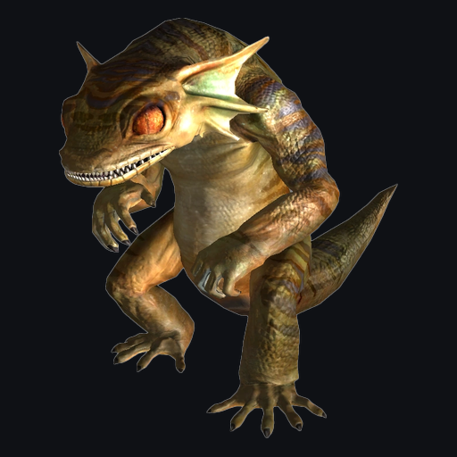
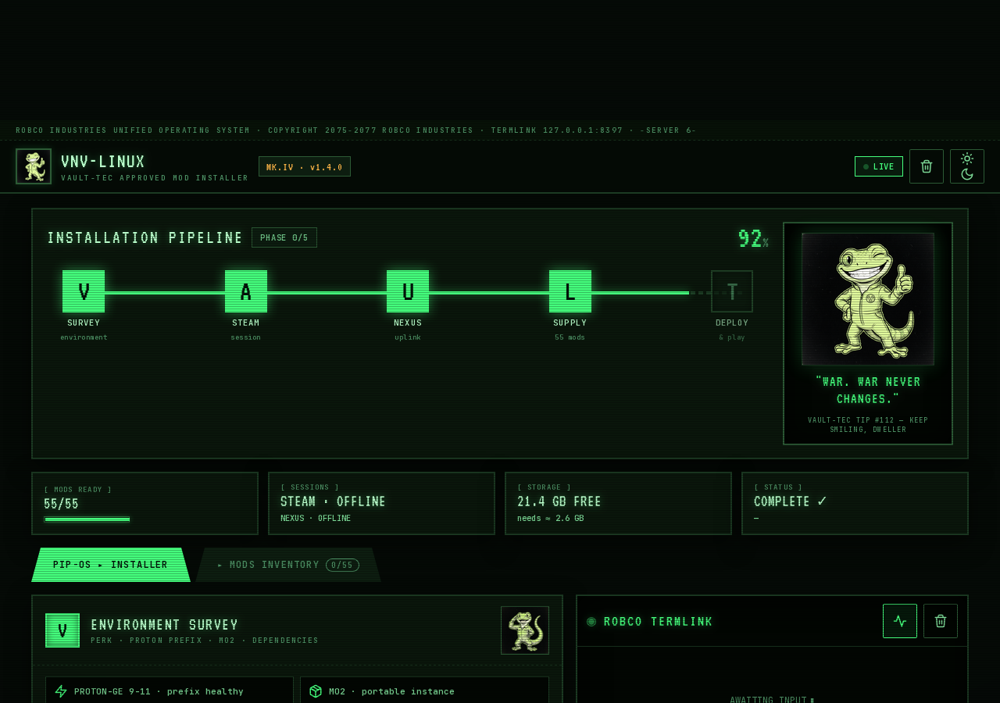
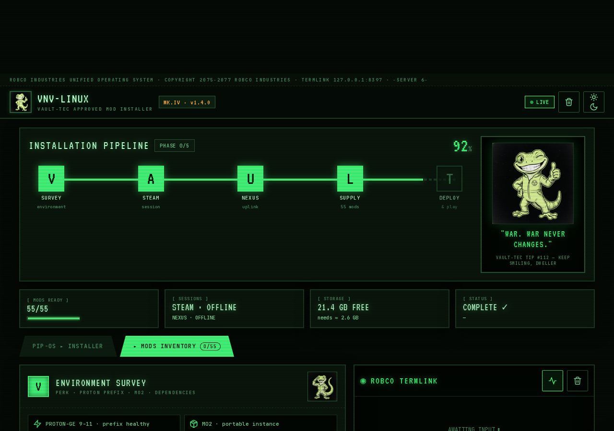

[OK] VERIFIED · 55 MODS
LINUX + STEAM
100% AUTOMATIC
Welcome, dweller. VNV-Linux automatically installs the Viva New Vegas (Core) modpack — 55 mods, mod organizer, NVSE, patches and INI tweaks — onto your Steam Fallout New Vegas on Linux. One command and the Pip-Boy does the rest.
Requirements: Steam with Fallout New Vegas (run once with Proton), a free Nexus Mods account and ~4 GB of space.
git clone https://github.com/jhoniwana/vnv-linux cd vnv-linux ./vnv.sh ui
A browser opens with the Pip-Boy wizard — each step with its own button and live progress.
./vnv.sh setup # environment (multi-distro, auto-installs deps) ./vnv.sh login # Nexus cookies (passes Turnstile) ./vnv.sh download # downloads the 55 mods (1.1 GB, with retries) ./vnv.sh install # MO2 + mods + root mods + INIs + LOOT ./vnv.sh salud # 12 health checks (exit 0 = healthy) ./vnv.sh run # launches the game
New game -> check Stewie Tweaks in Settings = mods loaded. Sprint and QOL from MCM (JAM).
| Command | What it does |
|---|---|
./vnv.sh ui | Pip-Boy web wizard (no terminal) |
./vnv.sh setup | Environment: system deps + venv + Camoufox + smoke test |
./vnv.sh login | Automatic Nexus login (Turnstile included) |
./vnv.sh credenciales | Saves email+password (600) for automatic re-login |
./vnv.sh download | Downloads the 55 mods with retries and verification |
./vnv.sh estado | Verifies downloads vs manifest |
./vnv.sh install | MO2 + import + root mods + INIs (idempotent) |
./vnv.sh loot | Validates the load order against LOOT (without touching the profile) |
./vnv.sh salud | 12 checks: exe/LAA, NVSE, BSAs, INIs, ESMs, downloads, MO2 |
./vnv.sh esmfix | UE ESM Fixes (native xdelta3 + structural validation) |
./vnv.sh run | Launches the game via MO2 (NVSE) |
./vnv.sh mo2 | Opens Mod Organizer 2 |
Every root mod from the VNV guide was ported to a native Linux executable/script — no Wine for the heavy lifting:
| Port | Repo | What it does |
|---|---|---|
| xNVSE | xnvse-linux | Installs the Script Extender DLLs into the game root |
| 4GB | fnv-4gb-patch-linux | Patches LAA 4GB into FalloutNV.exe (verified in the PE header) |
| UE ESM Fixes | ue-esm-fixes-linux | Extracts the LZ4/xdelta3 patches from the .mpi and repairs the 6 ESMs |
| no-op on Steam | epic-games-patcher-linux | Only for the Epic Games version |
| DO NOT USE | fnv-bsa-decompressor-linux | Research: a no-op on the current depot (BSAs already raw) — keep vanilla |
nexusmods_session (+ cf_clearance), saved with 600 permissions./Download/?id=…&game_id=130 works without Premium; the button lives in a web component's shadow DOM — solved by inspecting Nexus's JS bundle.bit30 XOR (flags & 0x04). Verdict: the decompressor is a no-op on the current depot.Captures of the Pip-Boy wizard running in LIVE mode (connected to the real backend):


git clone https://github.com/jhoniwana/vnv-linux cd vnv-linux ./vnv.sh ui
A Pip-Boy style browser opens at http://127.0.0.1:8397 — green terminal, CRT scanlines, live progress.
Click SET UP ENVIRONMENT. It detects your distro and installs Python, Camoufox and the system libraries. Wait for the green PASSED pill.
Enter your Nexus email + password, then CONNECT NEXUS. The Turnstile captcha is solved automatically (anti-detection browser). The session cookie is saved locally with 600 permissions — never uploaded.
Click START SUPPLY DROP — downloads the 55 mods (~1.1 GB) with retries and integrity checks. You can switch to the SUPPLY tab to watch each mod's status. Power outage? Re-run and it continues where it stopped.
INSTALL & CONFIGURE creates the MO2 instance, imports the 55 mods in canonical order, applies the native root mods (xNVSE, 4GB, UE ESM Fixes) — every step verified after running, with automatic fallbacks.
Hit LAUNCH GAME. In-game: check Settings -> Stewie Tweaks to confirm the mods are loaded. Sprint and QOL: MCM -> Just Assorted Mods. Welcome to the Mojave.
No. The repo only downloads the 55 mods with YOUR Nexus session (free). It redistributes nothing copyrighted.
Only for MO2 (it runs inside the Proton prefix). The root mods (NVSE, 4GB, ESM Fixes) are native — no Wine.
That's expected: verify reverts the root mods and INIs. Just re-run ./vnv.sh install (idempotent) and you're done.
You don't need it. The 11 BSAs it touches already ship uncompressed on the current depot (2026). Installing the mod changes nothing.
Saves from another installation are not compatible (formids renumbered by the ESM Fixes). Start a new game.
This project stands on the shoulders of the wasteland. Everything used is credited here:
Every mod (YUP, xNVSE, JIP LN, Stewie Tweaks, NVTF, kNVSE, JAM and the rest) belongs to its Nexus Mods author. This project only downloads and installs them with your session — it redistributes nothing.
wbBSArchive.pas (the real FNV BSA format and its XOR compression semantics)Original fan-made GREEN GECKO sprite art generated for this project (poses: thumbs-up, walk, sleep, hurt, salute). No Nexus/LoversLab or mod art was used.
Fallout: New Vegas is © Bethesda Softworks / Obsidian Entertainment. This is a fan-made tool; it is not affiliated with or endorsed by Bethesda, Nexus Mods or any mod author. The Viva New Vegas guide is © Qolore7. The mods remain the property of their respective authors.
{kind=link}
{kind=link}